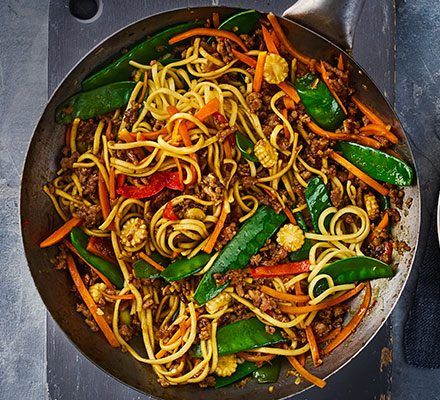

Stir Fry Recipe

Ingredients
- Chicken Breast or Thighs
- Soy Sauce
- Oyster Sauce
- Vegetables
- Garlic
How to make:
- Sauté aromatics: In a large pan or wok, heat oil and sauté chopped onions, garlic, and ginger until fragrant and softened
- Cook the chicken: Add sliced chicken breast (or thighs) to the pan. Cook until browned and cooked through, stirring occasionally
- Add sauce: Pour in a mix of soy sauce, oyster sauce, and a splash of rice vinegar. Stir well to coat the chicken
- Add vegetables: Toss in your choice of vegetables (like bell peppers, carrots, broccoli, or snap peas). Cook until tender-crisp, stirring frequently
- Serve: Serve the stir-fry over steamed rice or noodles for a quick, flavorful meal